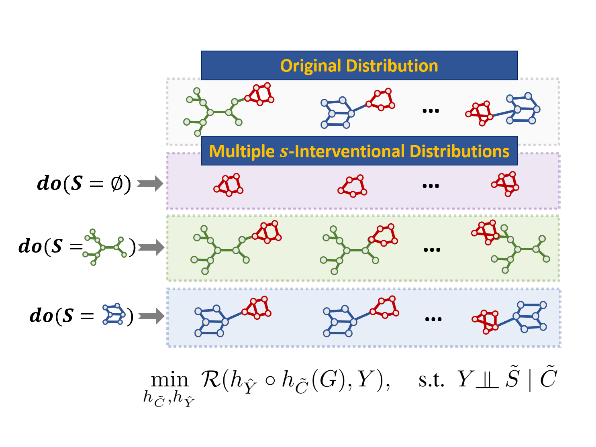
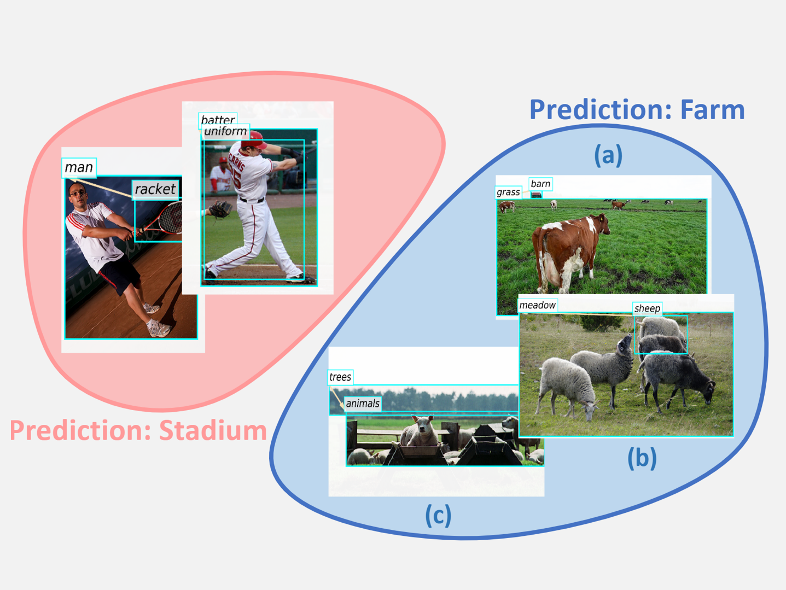
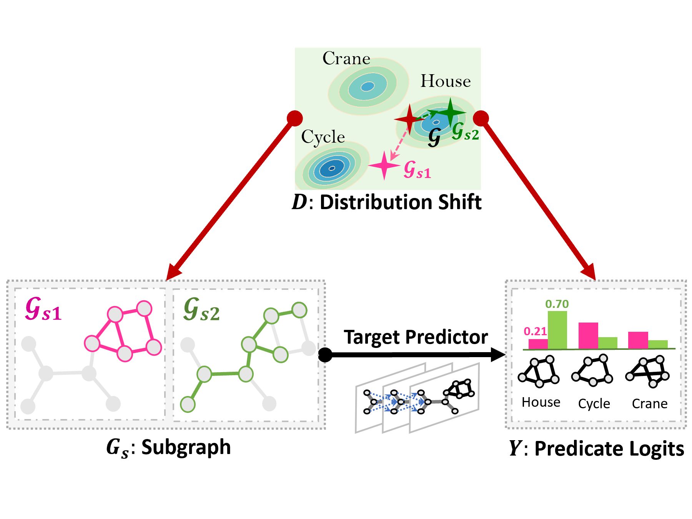
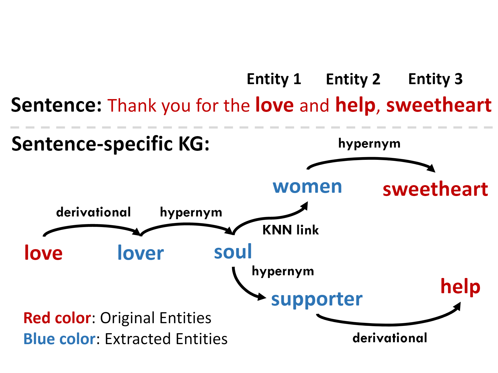

Shirley Wu
Shirley (Ying-Xin) is an undergraduate (fourth year) in School of Data Science of University of Science and Technology of China (USTC), advised by Prof. Xiangnan He. She will join Stanford CS as a Ph.D. candidate.
Her current research interests include
Research
Topics
My current focus is mainly centered with GNNs and their applications.
Excited to explore more!
-

Discovering Invariant Rationales for Graph Neural Networks
ICLR. March 2022.
Ying-Xin Wu, Xiang Wang, An Zhang, Xiangnan He, Tat-Seng Chua. We propose one novel objective which identifies causal features that are invariant under any interventional distributions, thus pursuing intrinsic interpretable GNNs that are robust and generalizable to out-of-distribution datasets.
-

Towards Multi-Grained Explainability for Graph Neural Networks
NeurIPS. December 2021.
Xiang Wang, Ying-Xin Wu, An Zhang, Xiangnan He, Tat-Seng Chua. We exploit the pre-training and fine-tuning idea to develop an explainer that generates multi-grained explanations, i.e., global patterns for a group or local patterns for an instance's prediction.
-

Deconfounding to Explanation Evaluation in Graph Neural Networks
Preprint.
Ying-Xin Wu, Xiang Wang, An Zhang, Xia Hu, Fuli Feng, Xiangnan He, Tat-Seng Chua
-
Discovering Invariant Rationales for Graph Neural Networks
ICLR. March 2022.
Ying-Xin Wu, Xiang Wang, An Zhang, Xiangnan He, Tat-Seng Chua. We propose one novel objective which identifies causal features that are invariant under any interventional distributions, thus pursuing intrinsic interpretable GNNs that are robust and generalizable to out-of-distribution datasets.

-

Knowledge-Aware Meta-learning for Low-Resource Text Classification
EMNLP (Oral). Nov. 2021. Short Paper.
Huaxiu Yao, Ying-Xin Wu, Maruan Al-Shedivat, Eric P. Xing. We study a low-resource text classification problem and bridge the gap between meta-training and meta-testing tasks by introducing additional representation for each sentence learned from the extracted sentence-specific knowledge graph.
Personal
Experiences
By reversed time order.
Univ. of Science & Technology of China
2018.9 - nowAdvisor: Prof. Xiangnan He
I am lucky to study in USTC and follow Xiangnan, which highly promotes me to go for professional competence.
National University of Singapore
2020.3 - 2021.12 Advisor: Dr. Xiang Wang & Prof. Tat-Seng ChuaI am honored to be an intern in NExT++ of NUS. This internship strengthens my problem-solving skills and broadens my research horizons.
Stanford University
2021.3 - nowAdvisor: Dr. Huaxiu Yao
I also collaborated with Huaxiu about Meta-learning and Knowledge Graph, and we are currently building machine learning models that are robust to distribution shifts.
University of Western Australia
2020.6 - 2020.8 Advisor: Prof. Mark Reynolds & Dr. Du HuynhResearch: Audio Classification
Services
Research
Thoughts
Sometimes I write some casual thoughts here.
Explanations can make deep models more transparent, unbiased model can make themselves more trustworthy. (√)
Miscellaneous
I enjoy calligraphy and extreme sports.
Besides, as requsted by my BF, I include his link here